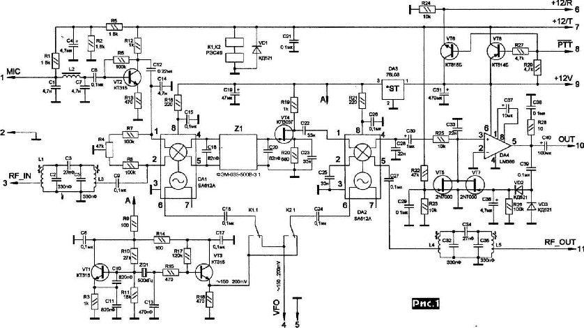
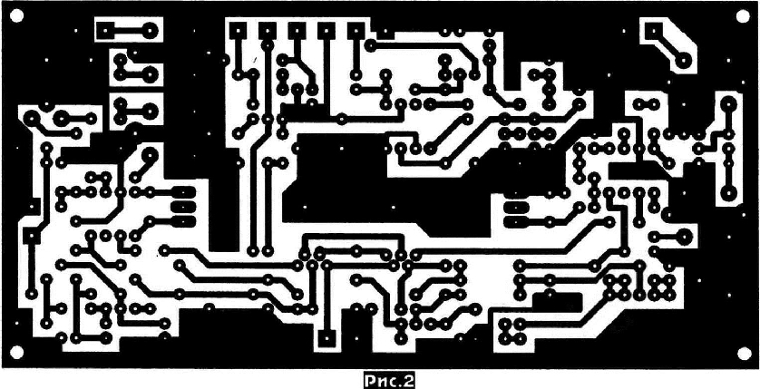
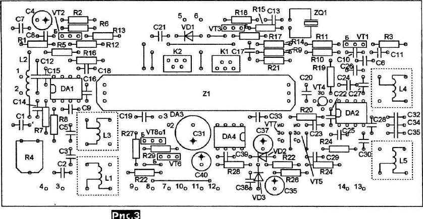
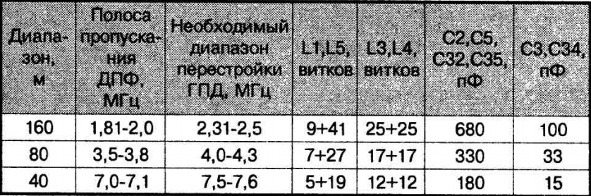

Основная плата трансивера «Аматор-ЭМФ»
Алексей Темерев, г.Светловодск, Кировоградская обл.
В своё время автором было разработано несколько вариантов несложных трансиверов с применением микросхем смесителей К174ПС1 [2,3]. В предлагаемой основной плате однодиапазонного трансивера использованы микросхемы импортного производства SA612[1]. В качестве фильтра основной селекции используется ЭМФ. Трансивер может быть выполнен на один из радиолюбительских диапазонов 160, 80 или 40 метров.
Принципиальная электрическая схема основной платы трансивера приведена на рис.1.

В режиме приёма сигнал через двухконтурный диапазонный полосовой фильтр (ДПФ) L1LЗС2СЗС5 поступает на первый смеситель DA1. Сигнал генератора плавного диапазона (ГПД) поступает на 6 вывод микросхемы через контакты К1.1 реле К1. Нагрузкой смесителя является электромеханический фильтр (ЭМФ) верхней или нижней боковой полосы промежуточной частоты. Симметричное включение ЭМФ улучшает балансировку и, соответственно, подавление несущей частоты в режиме передачи. Каскад на полевом транзисторе VТ4 обеспечивает усиление сигнала промежуточной частоты (ПЧ). С выхода усилителя сигнал поступает на второй смеситель DА2). Через контакты К2.1 реле К2 на 6 вывод микросхемы подаётся сигнал генератора опорной частоты 500 кГц. Низкочастотный сигнал звуковой частоты через простейший фильтр низкой частоты на элементах С28R25СЗЗ поступает на усилитель звуковой частоты DА4. Усилитель охвачен системой АРУ. Продетектированный звуковой сигнал управляет сопротивлением перехода сток-исток транзистора VТ7, обеспечивая тем самым автоматическую регулировку уровня звукового сигнала (АРУ) на входе микросхемы DА4. Вывод микросхемы нагружается на резистор - регулятор громкости (на схеме не показан) сопротивлением 100-680 Ом. К движку резистора подключаются низкоомные головные телефоны. На транзисторах VТ6 и VТ8 собран электронный коммутатор приём-передача. В режиме приёма (контакт РТТ свободен) - транзистор VТ6 открыт, а VТ8 закрыт. На контакте 6 основной платы (+12/В) присутствует напряжение.

В режиме передачи контакт РТТ соединяется с «корпусом» устройства, транзистор VТ6 закрывается, а VТ8 - открывается. Появляется напряжение на контакте 7 основной платы. При этом срабатывают реле К1 и К2 и включается микрофонный усилитель на транзисторе VT2. Электретный микрофон подключается к контакту 1 основной платы. Звуковой сигнал с выхода микрофонного усилителя поступает на первый смеситель DА1. Резистор R4 служит для точной балансировки смесителя в режиме передачи. На 6 вывод смесителя через контакты реле К1 поступает сигнал 500 кГц с опорного генератора. Сформированный SSВ сигнал ПЧ с подавленной несущей поступает на ЭМФ, где подавляется нерабочая боковая полоса и дополнительно - остаток несущей. На вывод 6 DА2 поступает сигнал ГПД. С выхода микросхемы сигнал любительского диапазона выделяется выходным ДПФ L4L5С32-С35 соответствующего диапазона и через контакт 11 основной платы поступает на усилитель мощности. Вход усилителя звуковой частоты DА4 в режиме передачи закорочен открытым переходом транзистора VТ5. Генератор опорной частоты собран на транзисторе VТ1 по схеме ёмкостной трёхточки. Сигнал 500 кГц снимается с С13 на эмиттерный повторитель на транзисторе VТЗ. Микросхемы смесителей и опорный генератор питаются от отдельного восьмивольтового стабилизатора DАЗ.
Основная плата собрана на плате из текстолита с двухсторонней металлизацией. Размеры платы 62,5x127,5 мм рис.2). Верхний слой металлизации служит экраном и соединяется с «минусовым» выводом источника питания. Металлизация вокруг отверстий, не соединённых с «минусом», удаляется. Расположение элементов на печатной плате приведено на рис.3.

В конструкции основной платы использованы постоянные резисторы типа С1-4, С2-23, МЛТ; подстроечные - СП4-1А. Все постоянные конденсаторы - К10-17, КМ; электролитические - К50-35. Катушки индуктивности L1_3...L_5 намотаны на полистироловых каркасах от УКВ радиостанции «Лён» диаметром 5 мм с подстроечным сердечником. Данные полосовых фильтров для различных диапазонов приведены в таблице. Диаметр провода 0,12...0,15 мм. Катушки помещены в экран. Реле К1 и К2 - РЭС49 с сопротивлением обмоток 270 Ом. Дроссель L2 - типа ДМ-0,1 индуктивностью 100 мкГн. Электромеханический фильтр - ФЭМ-035-500В-3.1. Можно использовать фильтры с рабочей нижней боковой полосой. Раскладка частот ГПД будет в этом случае отличаться от приведённой в таблице.

Настройка тракта.
В режиме приёма требуется только настройка входного полосового фильтра. Это можно сделать с помощью соответствующих приборов или даже по максимальной громкости принимаемых станций. В режиме передачи необходимо подобрать коэффициент передачи микрофонного усилителя так, чтобы даже при произнесении громких звуков перед микрофоном не происходило ограничение сигнала. Контроль формы сигнала можно произвдить с помощью осциллографа на контакте 11 платы или уже на выходе усилителя мощности. Коэффициент передачи микрофонного усилителя изменяется подбором величины R13. Если используется динамический микрофон, элементы R1,R2,R5 и С4 устанавливать не нужно. Резистором R4 балансируют смеситель по максимальному подавлению несущей. Оптимальная амплитуда напряжения ГПД на контакте 4 основной платы 150...200 мВ.
В режиме передачи на контакте 11 основной платы уровень сигнала SSВ составляет 20-50 мВ на нагрузке 50 Ом.
Литература
1. Двойной балансный смеситель SА612А. Радио, №4, 2004 г., с.48-49.
2. Трансивер «Аматор-ЭМФ». Радиоаматор, №11, 1996 г, с. 18-19
3. Трансивер «Аматор-ЭМФ-У». Радиохобби, №5, 2000 г, с.33-38.
4. Архив схем и печатные платы в формате .lay
Главная | О своём городе | Антенны | Радиосвязь на КВ | Радиосвязь на УКВ | Гостевая
Copyright © 2018 Сайт радиолюбителей г. Климовичи | Design studio «Zurbagan»